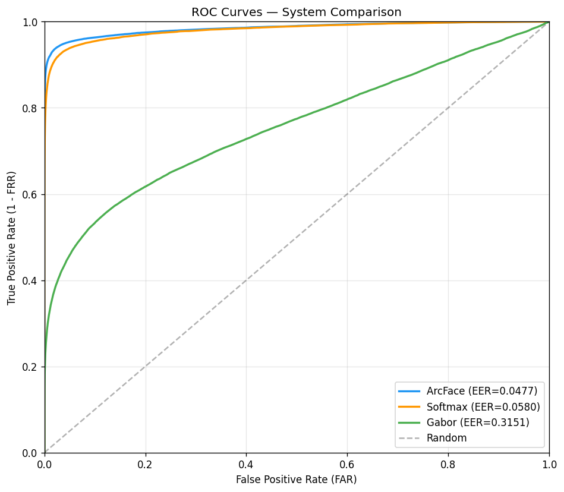
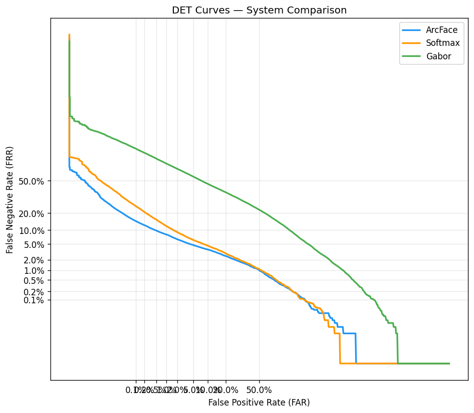
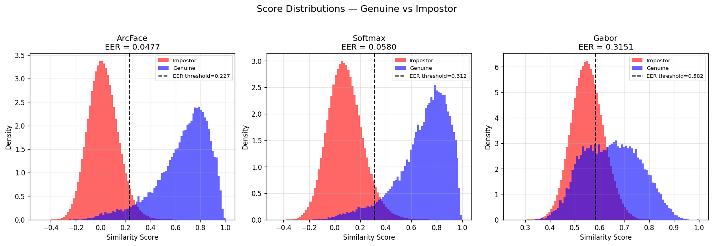
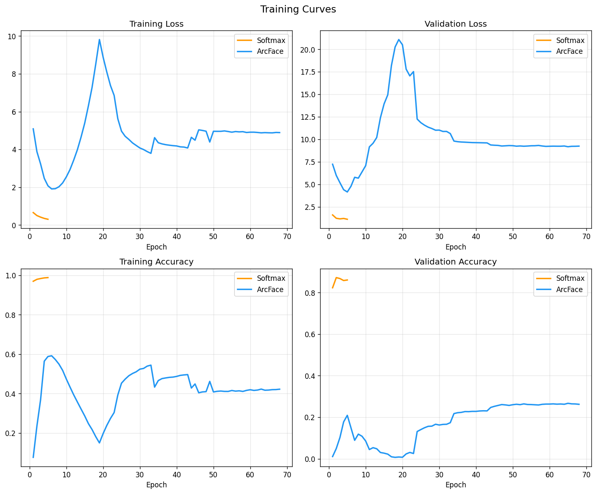
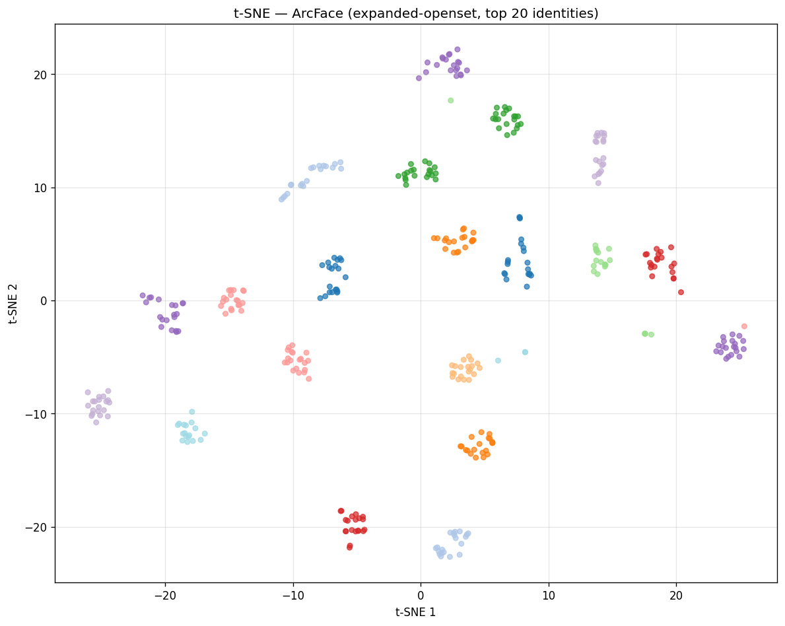
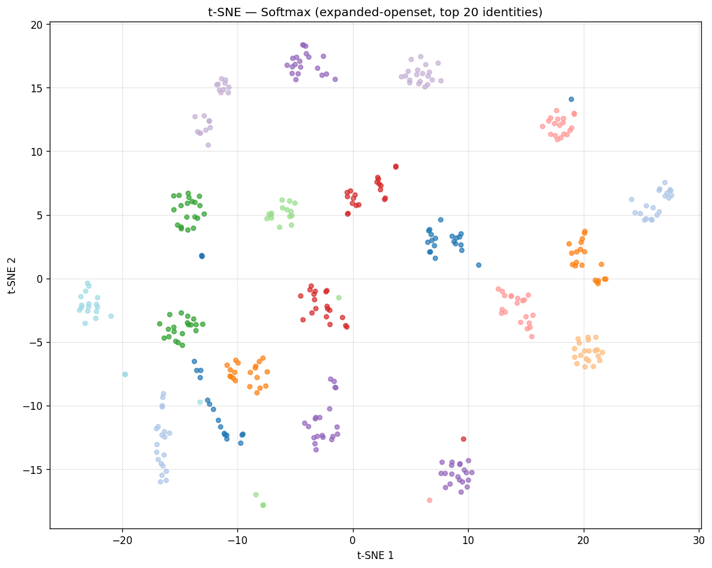

ArcFace EER
4.77%
1.02 points lower than Softmax.
TAR @ FAR=1%
91.90%
+3.85 points over Softmax.
TAR @ FAR=0.1%
85.31%
+10.85 points over Softmax.
Open-set test
4,728
samples from 419 unseen identities.
Headline Metrics
| System | EER | TAR @ FAR=1% | TAR @ FAR=0.1% | Genuine Mean | Impostor Mean | Score Gap |
|---|---|---|---|---|---|---|
| ArcFace | 4.77% | 91.90% | 85.31% | 0.6587 | 0.0191 | 0.6397 |
| Softmax | 5.80% | 88.09% | 74.46% | 0.6945 | 0.0843 | 0.6102 |
| Gabor | 31.51% | 32.67% | 20.10% | 0.6489 | 0.5525 | 0.0965 |
Bootstrap Evidence
| Metric | ArcFace Mean [95% CI] | Softmax Mean [95% CI] | ArcFace - Softmax [95% CI] |
|---|---|---|---|
| EER | 4.78% [4.60%, 4.97%] | 5.79% [5.61%, 5.98%] | -1.01 pts [-1.17, -0.85] |
| TAR @ FAR=1% | 91.89% [91.54%, 92.20%] | 88.03% [87.55%, 88.47%] | +3.85 pts [+3.46, +4.26] |
| TAR @ FAR=0.1% | 85.24% [84.54%, 85.87%] | 74.36% [73.27%, 75.52%] | +10.88 pts [+9.80, +12.01] |
Supplementary Classification-Style Metrics
Metric mapping: TAR is the verification equivalent of recall/true-positive rate for genuine pairs. Precision, F1, and pair accuracy depend on the decision threshold and on the genuine/impostor pair ratio, so they are reported here as supplementary operating-point metrics rather than as the primary biometric claim.
| System / Operating Point | Recall | Precision | F1 | Pair Accuracy | Balanced Accuracy |
|---|---|---|---|---|---|
| ArcFace @ FAR=1% | 91.90% | 47.89% | 62.97% | 98.93% | 95.45% |
| Softmax @ FAR=1% | 88.09% | 46.83% | 61.15% | 98.89% | 93.55% |
| ArcFace @ FAR=0.1% | 85.31% | 89.51% | 87.36% | 99.76% | 92.60% |
| Softmax @ FAR=0.1% | 74.46% | 88.16% | 80.73% | 99.65% | 87.18% |
Protocol
- Mode: expanded open-set evaluation.
- Identity-disjoint split with zero train/test identity overlap.
- Test set: 4,728 samples from 419 unseen identities.
- Pair counts: 27,987 genuine pairs and 2,798,700 impostor pairs.
- Training data: original processed tensors plus recovered tensors from existing CASIA-IrisV4 subsets.
Artifacts
- Results JSON:
reports/phase8_expanded_openset_results.json - Figures:
figures/expanded_openset/ - ArcFace checkpoint:
models/arcface_expanded_openset_best.h5 - Softmax checkpoint:
models/softmax_expanded_openset_best.h5
Visual Evidence





